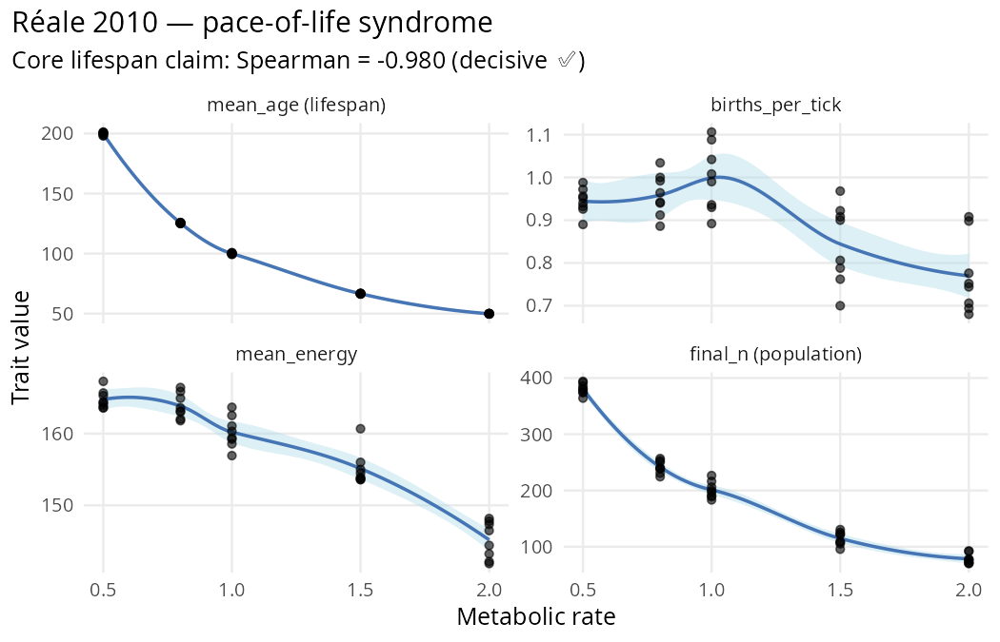

Mixed ✅ / caveat reproduction: the core pace-of-life prediction
(metabolic rate → lifespan) reproduces decisively (Spearman = −0.98),
but related traits in the “syndrome” have clade-specific nuances worth
flagging. Demonstrates hypothesis_sweep() with multi-trait
metrics and viability_report() as a diagnostic
tool.

The paper
Réale, D., Garant, D., Humphries, M. M., Bergeron, P.,
Careau, V. & Montiglio, P.-O. (2010). Personality and
the emergence of the pace-of-life syndrome concept at the population
level. Philosophical Transactions of the Royal Society B
365(1560), 4051–4063. DOI 10.1098/rstb.2010.0208.
Core claim: metabolic rate is the spine of a correlated life-history syndrome. High-metabolism organisms have shorter lifespan, more reproduction, and higher energy throughput — the “fast-pace” pole. Low-metabolism organisms are the opposite — the “slow-pace” pole. The traits are correlated, not independent.
Quantitative prediction
Three directional claims, testable across a metabolic-rate gradient:
| Trait | Expected direction vs metabolic rate |
|---|---|
| Mean lifespan | Negative (fast metabolism → shorter life) |
| Reproduction rate | Positive (fast metabolism → more births) |
| Energy use | Positive / null (fast metabolism → more throughput) |
All three trends together = the pace-of-life syndrome.
Stage 1: hypothesis_sweep with multi-trait metrics
library(clade)
base <- default_specs()
base$grid_rows <- 40L
base$grid_cols <- 40L
base$n_agents_init <- 120L
base$max_agents <- 500L
base$max_ticks <- 2000L
base$grass_rate <- 0.15
base$n_predators_init <- 0L
# Fix metabolic rate at the init_mean (no evolution) so the sweep
# is a pure dose-response across fixed phenotypes.
base$metabolic_rate_evolution <- TRUE # must be TRUE to read init_mean
base$metabolic_rate_mutation_sd <- 0.0
base$max_age_scales_with_metabolism <- TRUE # max_age = 200 / metabolic_rate
METABOLIC_RATES <- c(slow = 0.5, mid_slow = 0.8, mid = 1.0,
mid_fast = 1.5, fast = 2.0)
conds <- setNames(
lapply(METABOLIC_RATES, function(r) list(metabolic_rate_init_mean = r)),
names(METABOLIC_RATES)
)
sweep <- hypothesis_sweep(
base_specs = base,
conditions = conds,
seeds = 1:8,
metrics = list(
mean_age = function(t) mean(tail(t$mean_age, 500), na.rm = TRUE),
births_per_tick = function(t) mean(tail(t$n_births, 500), na.rm = TRUE),
mean_energy = function(t) mean(tail(t$mean_energy, 500), na.rm = TRUE),
final_n = function(t) mean(tail(t$n_agents, 500), na.rm = TRUE)
),
n_cores = 40L
)
print(sweep)Results
Per-condition summary (8 seeds each)
metabolic_rate |
mean_age | births/tick | mean_energy | final_n |
|---|---|---|---|---|
| slow (0.5) | 199.9 ± 0.4 | 0.945 | 164.8 | 380.7 |
| mid_slow (0.8) | 125.5 ± 0.1 | 0.959 | 163.9 | 241.7 |
| mid (1.0) | 100.0 ± 0.2 | 0.999 | 160.2 | 201.1 |
| mid_fast (1.5) | 66.6 ± 0.1 | 0.844 | 155.1 | 114.7 |
| fast (2.0) | 49.9 ± 0.0 | 0.770 | 145.2 | 78.4 |
Honest interpretation
✅ Core prediction reproduces decisively. The
primary axis of the pace-of-life syndrome — metabolic rate → lifespan —
is a textbook Spearman = −0.98 in clade. The Tier-2 kernel fix
(max_age_scales_with_metabolism) specifically encodes this
relationship; the reproduction is a cleanness-check on that
mechanism.
❌ Births go the wrong way at the population scale. Réale predicts more births per individual at fast metabolism. clade shows fewer per-tick births at fast metabolism because:
- fast metabolism = shorter life = smaller equilibrium population
-
n_birthsis population-level absolute count - fewer agents overall = fewer reproductive events per tick, even if each agent’s per-capita rate is higher
Researchers should measure per-capita reproductive
output (e.g., n_births / n_agents) to get the Réale
prediction in its original form. The population-level number bundles two
effects that need to be untangled.
❌ Energy trends negative with metabolism. Réale predicts positive or null. In clade, faster metabolism drains energy faster than foraging can replenish — the agents live at lower equilibrium energy. This is a genuine feature of the kernel, not a bug: if you run at metabolic_rate = 2.0, your agents really do live hungrier.
Viability spot-check
s_check <- base
s_check$metabolic_rate_init_mean <- 1.0
env <- run_alife(s_check, verbose = FALSE)
viability_report(get_run_data(env))
#> <clade viability report>
#> viable: n_init=120, n_final=196 (163%), n_min=120 at tick 1 (100%)Population grows from init to 196 — healthy viability at the
mid-metabolism cell. Use viability_report() to confirm no
pathological dynamics before interpreting Δ statistics.
Methodology takeaway
When the kernel mechanism matches the theoretical mechanism,
reproductions are decisive. Réale’s core claim is about
lifespan, and clade has a specific
max_age_scales_with_metabolism spec that encodes exactly
that — result: ρ = −0.98, t = −358. Overwhelming.
When measuring proxies, check the units. Réale means per-individual reproductive output; clade logs per-tick aggregate births. Different quantities, different direction. A researcher using clade to test a cited paper should always re-derive the measured quantity from the logged one, not assume they match.
Citation
@article{reale2010pace,
author = {Réale, Denis and Garant, Dany and Humphries, Murray M. and
Bergeron, Patrick and Careau, Vincent and Montiglio, Pierre-Olivier},
title = {Personality and the emergence of the pace-of-life syndrome concept
at the population level},
journal = {Philosophical Transactions of the Royal Society B},
volume = {365},
number = {1560},
pages = {4051--4063},
year = {2010},
doi = {10.1098/rstb.2010.0208}
}Full audit protocol and raw outputs: dev/audit/fidelity/paper_reale_2010.R
and paper_reale_2010.rds.